EGGSHELLS | Substitution to Regeneration
Eggshell waste is generated in large quantities globally. When sent to landfill, it decomposes under anaerobic conditions, releasing greenhouse gas into the atmosphere. With global egg production projected to reach 90 million tonnes by 2030, the scale of this overlooked byproduct is only growing.
Eggshell is composed primarily of calcium carbonate, giving it a hardness and heat resistance that make it physically workable. Its slightly porous structure also enables moisture absorption. When crushed, re-formed, and cured with a binder, these properties open up possibilities for material reuse.
This project explores how eggshell waste can be upcycled into functional products that partially replace single-use and non-degradable materials, retaining its inherent potential to return to soil.
Grounding the System
A bakery is chosen as the pilot context, because it generates eggshell waste in significantly greater quantities than a typical household, and its production and usage processes allow collection, processing, and reuse to be completed within a relatively compact loop, embedded in existing systems without requiring entirely new infrastructure.
This makes the intervention more feasible and gives it the potential to be extended and replicated in similar contexts.
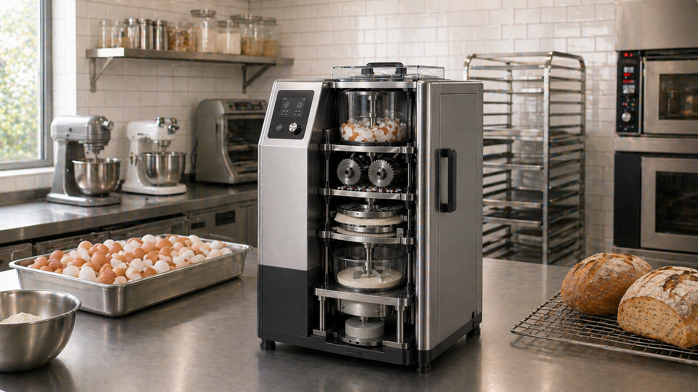
This diagram illustrates the material cycle — how eggshell waste moves through the system, from generation to processing, into new products, and eventually back to soil.

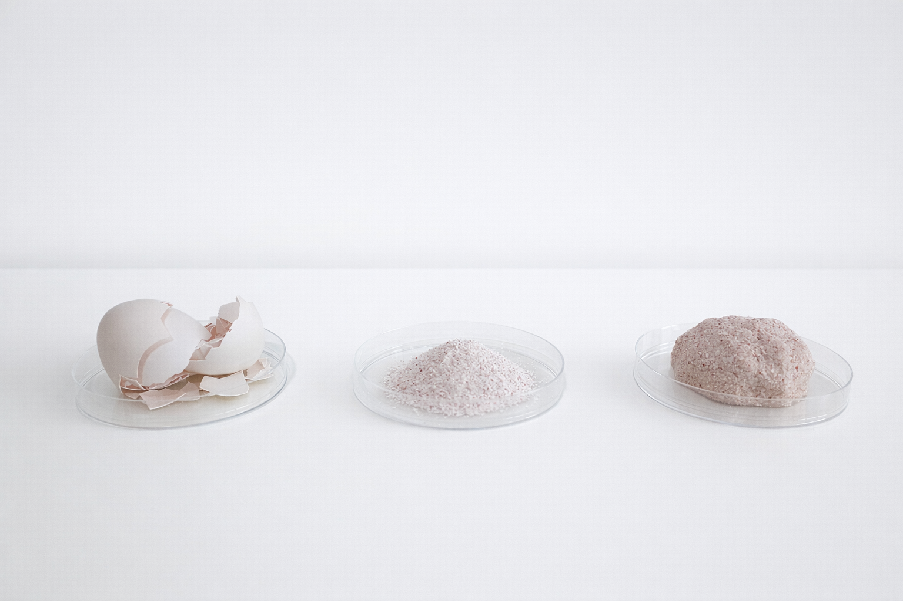
Recipe 1
Eggshell + Egg white 7:3
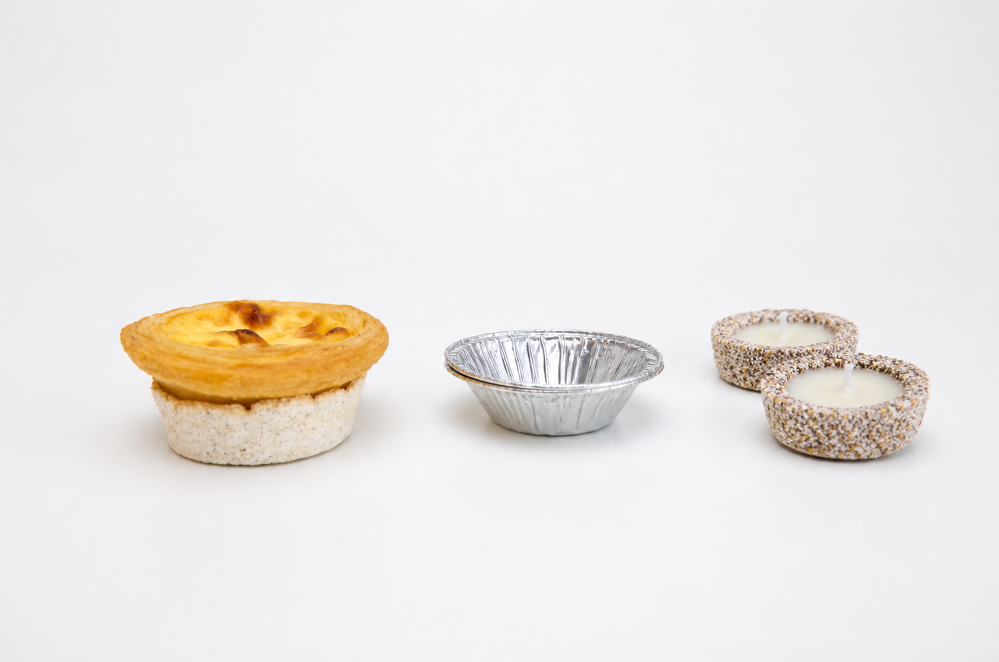
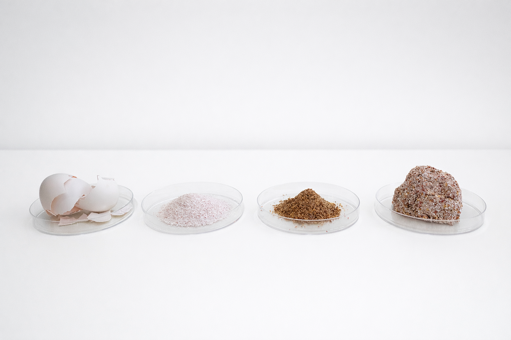
Recipe 2
Eggshell + Flaxseed 7:3
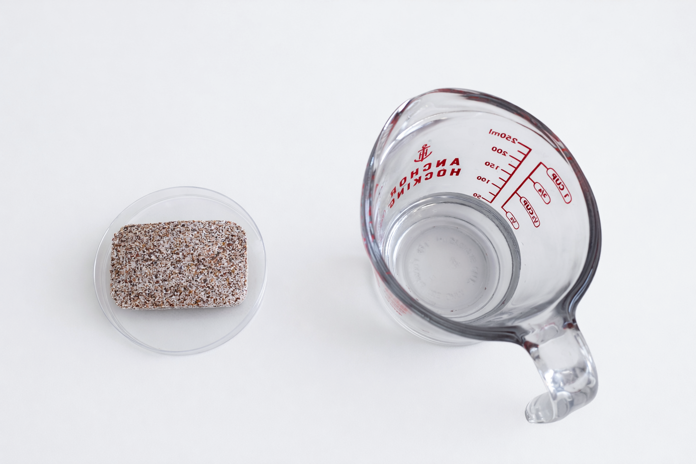
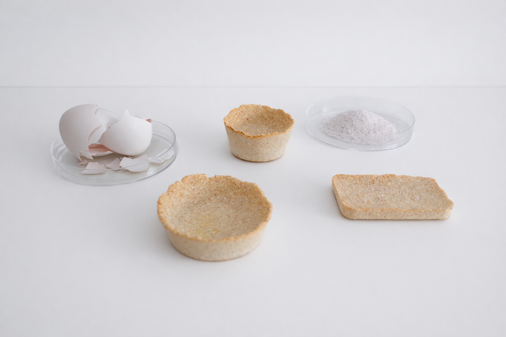
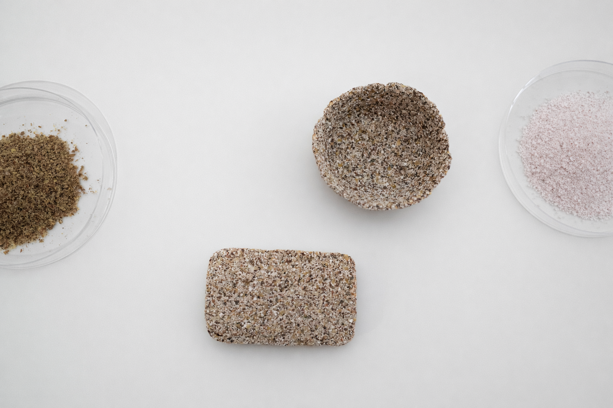
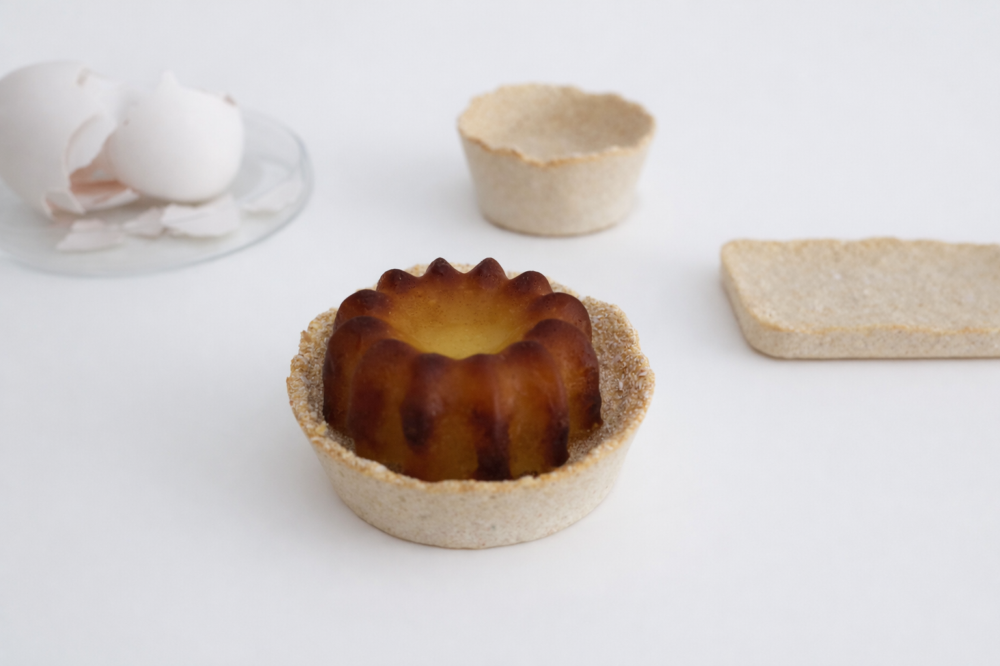
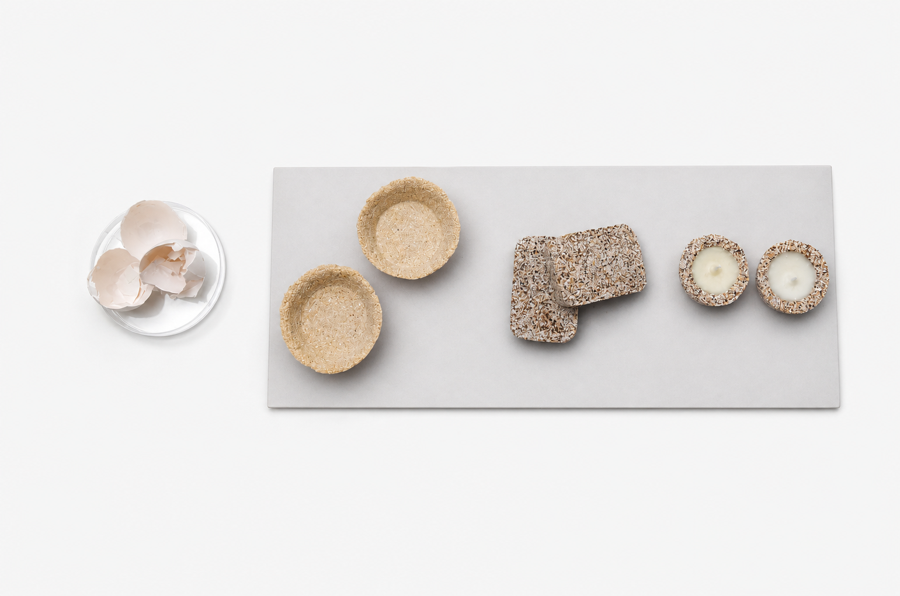
Products in Different Timescales
The three products operate at different time scales. Their impact can be perceived relatively quickly once in use, while their eventual return to soil happens over a much longer period. The design emphasis is placed on the more immediate, perceptible stages, while keeping the longer-term potential in view.
Scaling the System
The system is designed with the potential to scale. The data compares output at community bakery scale and at egg processing plant scale, with the absorbent block as a case study for scale-up effect.

This test data provides a basis for estimating the scale-up potential of the eggshell-made absorbent block. When scaled to brick size, it could serve as a biodegradable alternative to conventional chemical desiccants, with viable applications in spaces that require humidity control — replacing materials that are non-degradable and harder to dispose of responsibly.
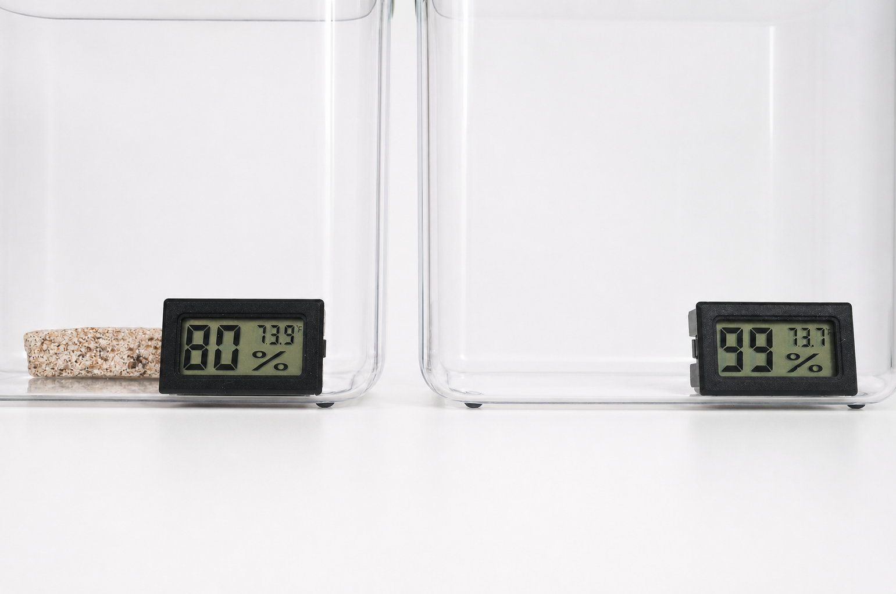
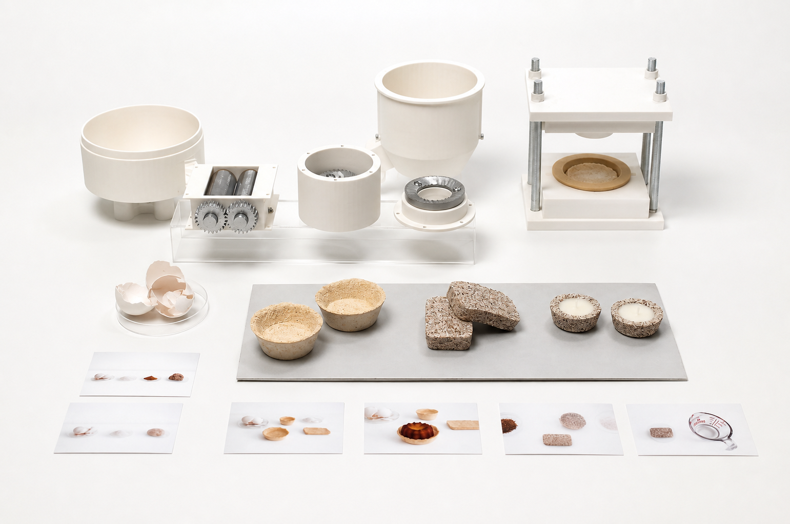
Its impact is limited, and deep behavioral change cannot be driven by a single product alone. But it demonstrates that working with a specific material can be a way of engaging with larger systems, and that even a local intervention can carry a broader climate intention.